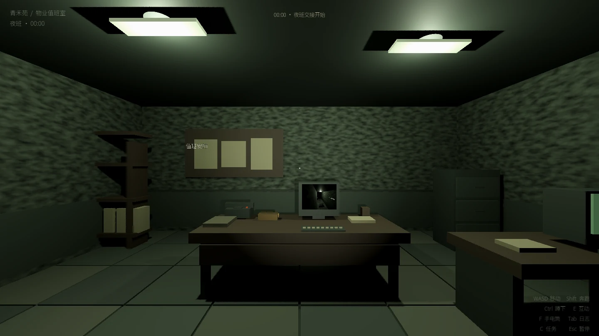
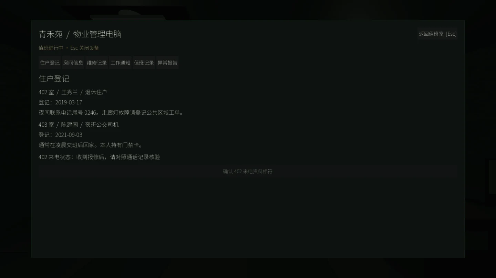
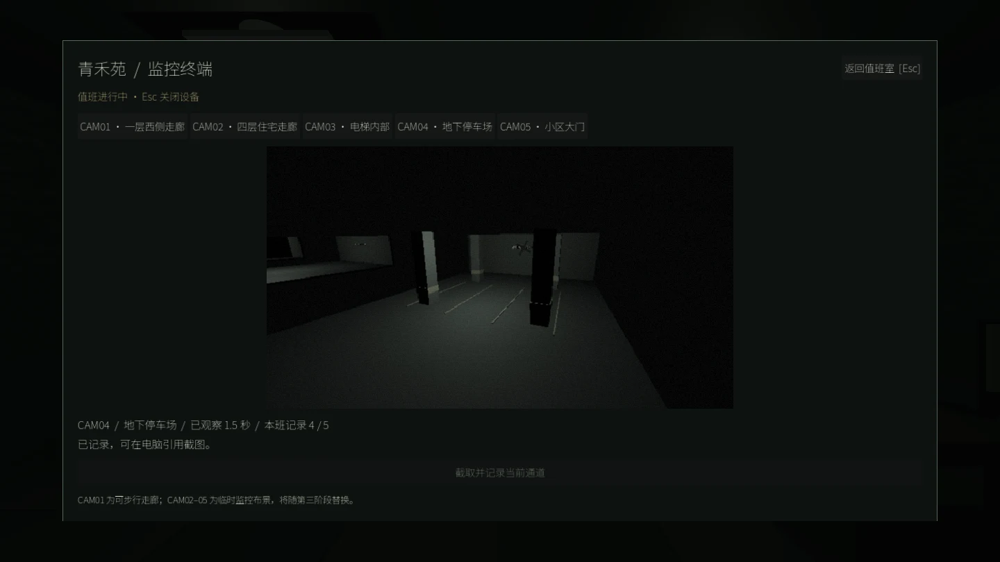

最后一班物业The Last Shift
午夜，接过物业值班室的钥匙。接听住户来电、核对报修、查看实时监控，在一间安静得有些异常的办公室里完成这一班的交接。
电脑键盘与鼠标 · 首次加载约 52 MB · 游戏内为中文
此游戏需要键盘与鼠标。手机可以浏览介绍和截图，游玩请换用电脑。

这一班，可以做什么
接听两通来电，核验住户和报修；查看五路监控并截图，提交观察报告，领还钥匙、填写日志，最后完成值班交接。
当前为可玩原型。完整恐怖剧情、异常事件、追逐与结局仍在开发，尚无存档；刷新或离开会重置本班进度。
先熟悉一下操作
W A S D移动
E互动 / 拾取
Shift奔跑
Ctrl蹲下
F手电筒
G放下物品
Tab / C日志 / 任务
Esc关闭界面 / 暂停


第一次接班？查看流程提示
先读桌上的交班记录、拿取值班钥匙并检查办公室门，再接听电话。使用物业电脑完成核验、签收与报修派单；在监控中观察每个频道至少 1.2 秒后记录。提交观察报告，领还维修钥匙，写下工作日志，最后在电脑上提交交接。